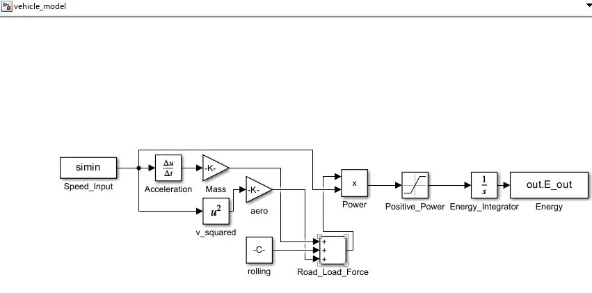
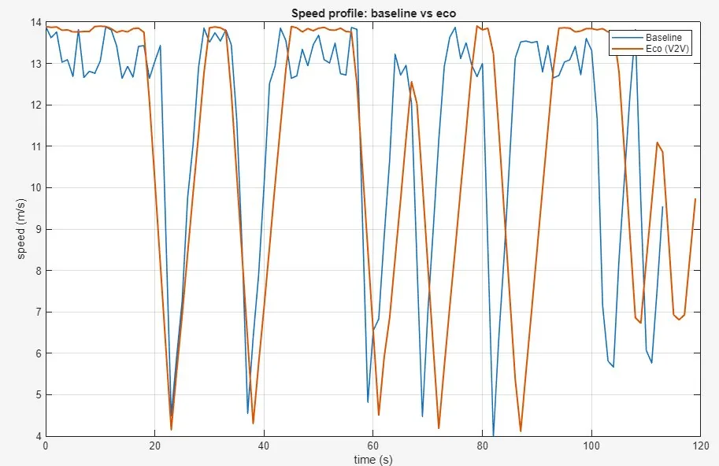
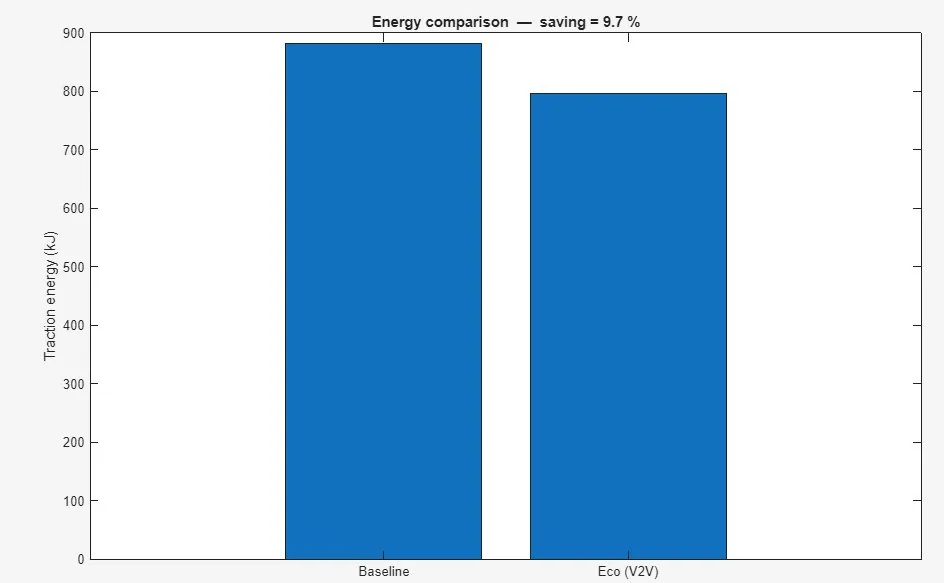
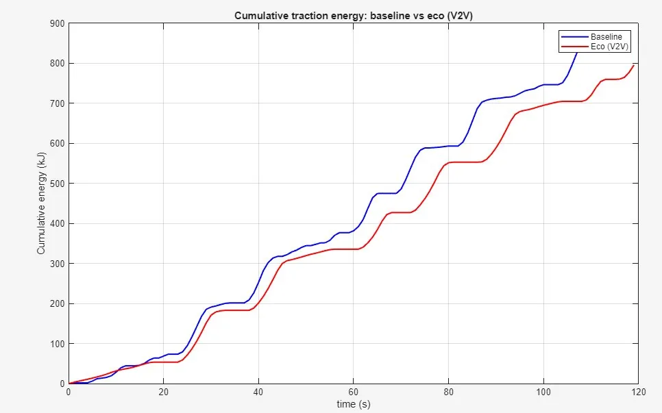

04 · Automotive · Energy modelling
V2V-Inspired Eco-Driving Energy Analysis
Answer one question with numbers: can an anticipating speed profile measurably reduce a vehicle's traction energy on the same urban route? V2V here is an advisory assumption, not a radio link.

Headline result
Baseline traction energy 881.5 kJ against 795.6 kJ for the eco profile. A 9.7 % saving over a 1.29 km route, at the cost of about 5 % more trip time.
What the project was given
The input to my side of the project was two speed profiles exported from my teammate's SUMO traffic scenario on an OpenStreetMap-imported urban route: a reactive baseline and a gentler anticipating profile. The interface between the two workstreams was one CSV with a fixed two-column contract, time in seconds and speed in metres per second, at 1 s steps. That file is the only thing that crossed between us.
The vehicle is a 1300 kg car with a 0.30 drag coefficient, 2.2 m² frontal area, 0.012 rolling resistance and a constant 0.25 engine efficiency, on a flat road. Where that parameter set came from is not recorded anywhere in the project files, so I cannot say whether the course supplied it or we chose it.
What the goal was
One question, answered with numbers: does an anticipating speed profile measurably reduce traction energy on the same urban route? No threshold was set for what would count as meaningful, so the result is reported as a measured difference.
What I did
The MATLAB and Simulink vehicle-modelling workstream: the longitudinal road-load model, the energy-to-fuel conversion and per-100 km normalisation, the parallel Simulink block implementation, the reconciliation between script and block model, and the comparison script and results plots.
My teammate built the SUMO microscopic traffic scenario and exported the two ego speed profiles. The two workstreams met at a single interface: his speed profiles, my energy model.
Fuel equivalent falls from 8.47 to 7.62 L/100 km. Mean absolute acceleration falls from 1.05 to 0.88 m/s², a reduction of about 16 %. Because the two runs differ slightly in distance (0.3 %) and time (5 %), the saving is reported per kilometre rather than as a raw total.
% ---- VEHICLE PARAMETERS ---- m = 1300; % kg car mass Cd = 0.30; % - drag coefficient A = 2.2; % m^2 frontal area Cr = 0.012; % - rolling resistance eta = 0.25; % - engine efficiency % ---- PHYSICS ---- a = gradient(v, t); % acceleration (m/s^2) F = m.*a + Cr*m*g + 0.5*rho*Cd*A.*v.^2; % road-load force (N) P = F .* v; % power (W) P_pos = max(P, 0); % engine only pushes E_J = cumtrapz(t, P_pos); % cumulative energy (J) % ---- NORMALISE ---- dist_km = trapz(t, v) / 1000; fuel_L = (E_total/eta) / energy_per_litre; L_per_100km = fuel_L / dist_km * 100;
What went wrong, and the fix
The Simulink model and the MATLAB script gave different answers for the same speed profile, and the cause turned out to be numerical rather than physical. gradient(v,t) uses a central difference, while the Simulink Derivative block takes the one-sided slope of the linear interpolation. On a jittery 1 Hz speed trace with large second-to-second slope changes, those two definitions of acceleration diverge substantially. The integration methods differed as well.
The size of that disagreement before the fix was never written down, so I cannot quote it.
I bypassed the Derivative block entirely, pre-computed acceleration in MATLAB and fed it to the model as a second From Workspace input, then switched the solver to fixed-step ode2 at a 1 s step, which applies the trapezoidal rule exactly at the data points and so matches cumtrapz. Both scenarios then came out at 0.0 % discrepancy.
The trade-off is in what that number can be used for. The two implementations are now aligned rather than independently derived, so it is a consistency check that both solve the same equation, and nothing more.



What was not overcome
The route never produces a full stop. The vehicle slows to about 4 m/s and keeps rolling, so this is congestion oscillation rather than stop-and-go traffic, and the saving does not carry over to an urban cycle with standing starts.
The sample is one short route, one ego vehicle and a window of roughly two minutes. Nothing here establishes that the effect holds at other speeds, on gradients, or at other traffic densities, and no attempt was made to test that.
Scope and limitations
- V2V is an assumption, not an implementation. No radio link, no protocol, no communication model.
- The 0.0 % agreement between script and Simulink is a consistency check after aligning both implementations, not independent validation.
- Simulink, not Simscape. A block-diagram implementation of the same equations, not a physical network model.
- Constant average engine efficiency, a flat road, no engine map and no gearbox model.
- Simulation only. No vehicle, no dynamometer, no measured fuel.
- The SUMO traffic scenario is my teammate's workstream and is not claimed as my tool.